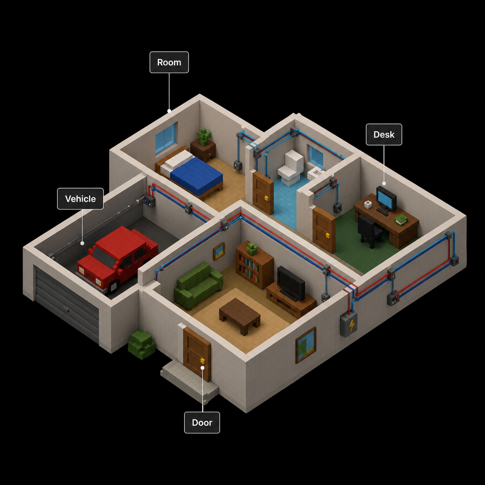
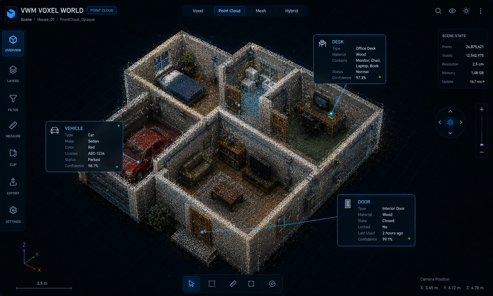
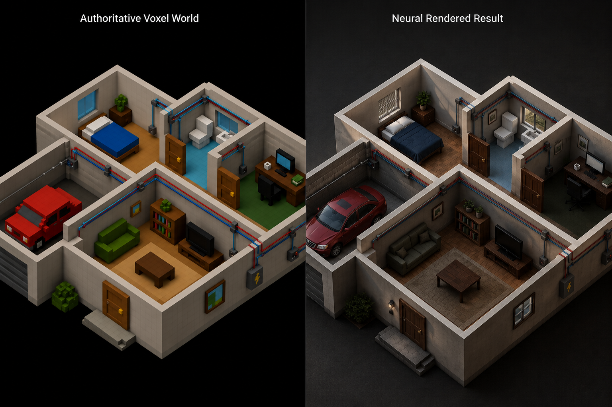
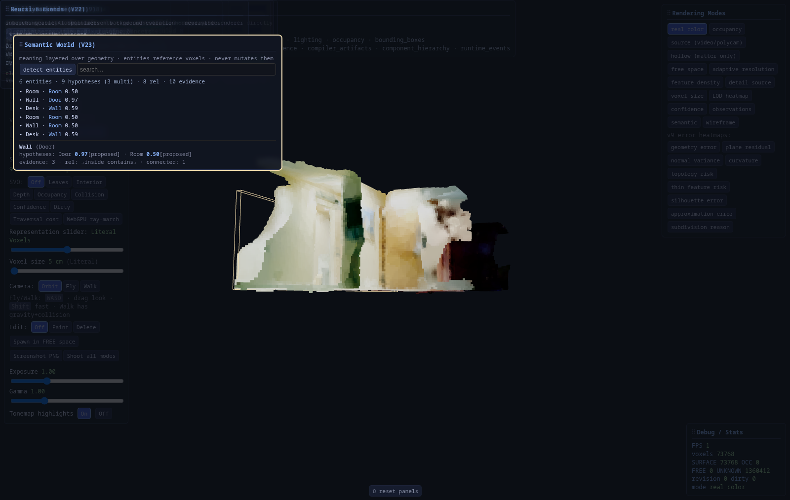

An open platform for building real-time digital worlds where reality, simulation, AI, robotics, and neural rendering converge.
Voxel World Model (VWM) is an open architecture for representing the world as a living, synchronized voxel simulation.
Rather than treating AI rendering as the simulation itself, VWM separates simulation, understanding, and visualization into independent layers.
The voxel world is the authoritative source of truth.
Everything else, including photorealistic rendering, is simply another way of observing that world.
The renderer never owns reality. The renderer visualizes reality.
Voxel worlds provide something extremely valuable:
Reproducible, predictable simulation behavior.
Environments you can change and reason about.
Efficient sync across devices and players.
World state that survives and evolves.
Meaning, not just geometry, a chair is a chair.
Straightforward rules for real interaction.
Instead of storing only pixels or meshes, VWM stores meaning. A door is a door. A vehicle is a vehicle, not simply millions of triangles.
One of the primary goals of VWM is creating live digital twins, real-world devices continuously synchronized into the voxel world.
Real-world events become voxel events. Opening your real office door can open the corresponding voxel door. Smart lights update the virtual room. Vehicle telemetry updates your vehicle inside the world.
Everything becomes an event. The simulation does not care where data originated, only that the world changed.
Unlike traditional voxel engines, objects are not merely blocks. Every object can contain semantic information that enriches understanding without changing gameplay.
Semantic information exists at every level, from the whole world down to individual components:

AI systems receive rich contextual information instead of only geometry.
Photorealism is not the simulation. Photorealism is a renderer. The same voxel world can be viewed through many rendering pipelines, changing renderers never changes simulation.
One authoritative world feeds a view generator; every rendering is just a different way of observing the same state.
When the chosen view is Gaussian, the path is fixed and modular: the world never changes; only observation quality does. Deterministic stages produce a Gaussian frame with metadata; optional AI stages enhance it — first locally (what this surface is), then globally (what this scene is). Each stage can be enabled or disabled independently.
Instead of one huge neural renderer solving every problem at once, VWM separates responsibilities the way the rest of the stack does — narrowly defined jobs that can improve independently.
Improves the rendered Gaussian image itself. Consumes RGB, depth, normals, motion vectors, semantic labels, material IDs, and voxel metadata embeddings.
Jobs: better brick / grass / bark / glass / reflections, cleaner edges, anti-aliasing, fine geometric detail — making the Gaussian frame look like a high-quality photograph of that surface. Live classical-CV chain; AI models plug in when weights are available.
Treats the result as a finished frame. Does not care about individual bricks.
Jobs: HDR tone mapping, cinematic color grading, GI enhancement, atmospheric haze, lens effects, bloom, DOF, motion blur, temporal stabilization, noise reduction, upscaling, and stylization (anime, watercolor, thermal, …).
Sunset example. Layer 1 knows “this voxel is polished brass” and produces realistic brass reflections. Layer 2 knows “the entire scene is golden hour” and warms lighting and atmosphere across the whole frame. Two different problems — complementary stages.
One model understands what this surface is; the other understands what this scene is. Deterministic world simulation and Gaussian rasterization stay authoritative; local and global AI only observe and enhance. That matches the modular philosophy through V16 and FRAME: each stage has a narrow job, can be toggled off, and can improve without rewriting the rest of the pipeline.

A real VWM deployment uses an open-source voxel game as the structured simulation layer, then replaces or overlays the native renderer with an AI-driven photorealistic pipeline, keeping geometry exact while upgrading appearance.

Objects may optionally include rendering hints (material, lighting, condition, style). The renderer uses these as conditioning information. Hard facts remain deterministic. Soft hints remain artistic guidance.
The platform ingests information from many sources, RGB and depth cameras, LiDAR, radar, GPS, smart home devices, industrial sensors, and more. Future pipelines (Gaussian splatting, neural reconstruction, semantic scene understanding) can all contribute to building or updating the voxel world.
VWM is intended to evolve beyond rendering, reasoning about objects, relationships, ownership, events, history, behaviors, automation, navigation, and robotics. The world becomes understandable, not merely visible.
Every change can be recorded: player movement, sensor events, AI actions, vehicle telemetry, automation, weather, and world modifications. Entire worlds become replayable for debugging, simulation, training datasets, and historical analysis.
Every subsystem is replaceable. New renderers, AI models, sensors, and robotics systems integrate without redesigning the platform.
Latest: V23, Semantic World Engine — meaning stored in a layer fully decoupled from geometry; entities reference authoritative voxels only; evidence → competing hypotheses with confidence. Prior: V22 neural backends on CUDA, V21 reactive runtime, V20 reality capture. Appearance v2.2 remains production default. v2.4 not trained.

Full milestone reports and benchmark tables:
Technical paper → Project updates → Benchmarks → End-to-end pipeline → Architecture status → Roadmap →Voxel World Model aims to become a universal foundation for persistent digital worlds, a place where:
The simulation remains stable. The visualization evolves forever.
Shipped through V23 (semantic world engine) · V22 (neural backends on CUDA) · V21 reactive runtime · V20 reality capture. Capability layers next: digital twins → spatial database → plugin SDK / World OS → world intelligence — plus polish V13 streaming / global frame post and V15 Part 2 browser migration. Full definitions of done and dependencies:
Full roadmap →This GitHub organization hosts the components that make Voxel World Model possible:
Every repository contributes toward a common goal: building an open, persistent, AI-native world model for reality itself.